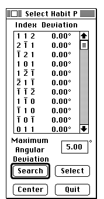

Distributed By: Virtual Labs
Select a Habit Plane Dialog Box
PATH...{Stereographic Projection Object}:Function Menu:Select a Habit
Plane...

Select Habit Plane
The Select Habit Plane function facilitates the determination of the habit
plane occupied by a particular defect. When the function is first activated,
the gun sight cursor appears. Use this cursor to select the defect direction.
After the defect direction has been selected, the Select Habit Plane dialog
box will appear. At this point enter the deviation from 90° that is
to be used as the selection criteria. Press Search. A list of potential
planes and their deviations from ninety degrees will appear. Clicking on
the desired set of indices and pressing Select will cause that particular
plane pole to be marked. Clicking on Center will rotate the selected pole
to the center of the stereogram.
Author: J.ames T.
Stanley
 Desktop
Manual:Dialog Boxes
Desktop
Manual:Dialog Boxes
Distributed By: Virtual Labs
Last Updated:1/12/96 Sat, Apr 27, 1996